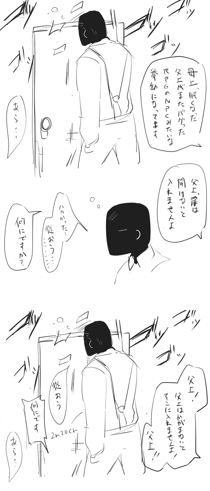
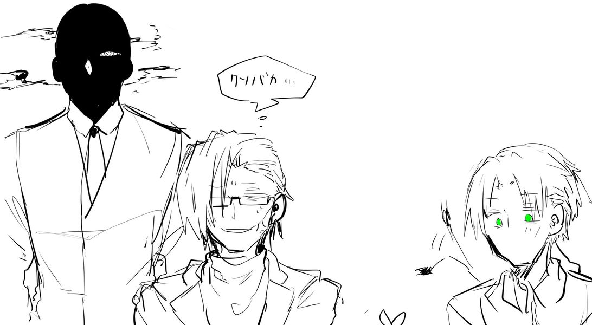
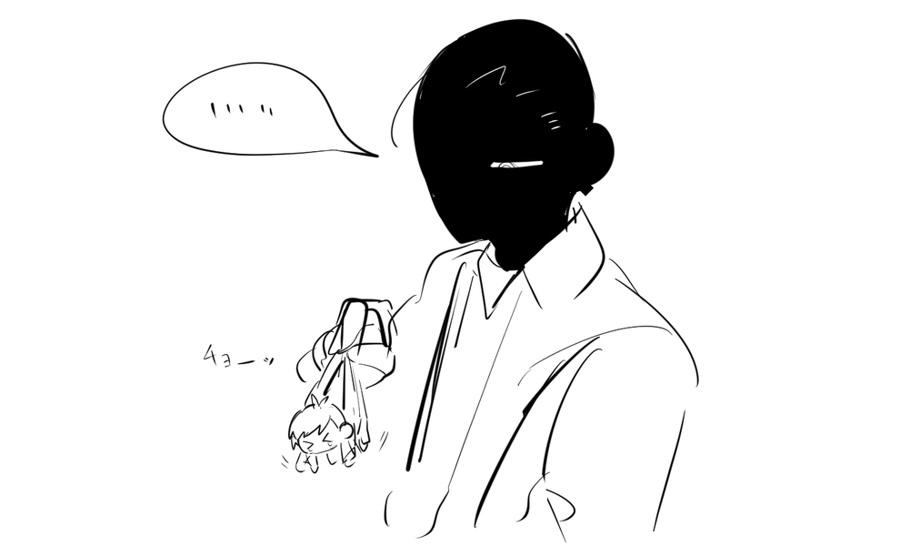
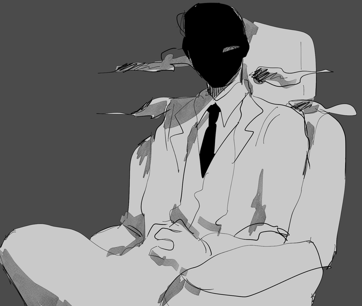
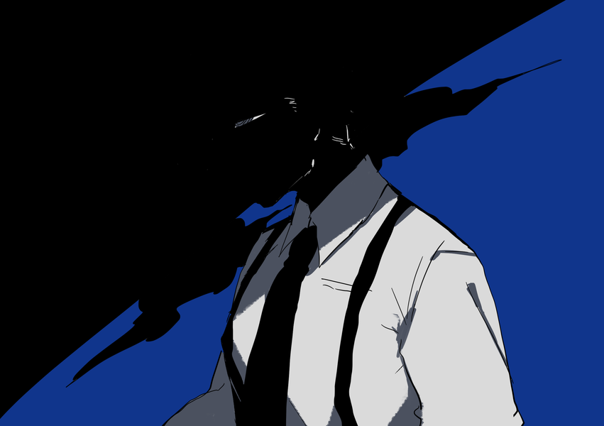

<!doctype html>
<html lang="ja">
    
</html>

	<head>

	    
<meta charset="utf-8">
  <meta name="viewport" content="width=device-width,initial-scale=1.0">

<meta NAME=”ROBOTS” CONTENT=”NOINDEX,NOFOLLOW,NOARCHIVE”>


<script src="//code.jquery.com/jquery-2.2.4.min.js"></script>
<script>
//共通パーツ読み込み
  $(function() {
       $("#side").load("side.html");

});
</script>

 <title>宇宙</title>
<link rel="stylesheet" href="style.css">


 	</head>

 	<body>

<div id="wrapper">
<div id="side"></div>
  <div class="right-column"><br><br>
 <table>
	<tbody		<tr>
>
			<td>
			
			</td>
		</tr>
		<tr>
			<td><p>〇ジャックの家族の話</p>
				


<p class ="gazou2"></p>

<p class ="gazou2"></p>

<p>ジャックの父　■■■■黒男</p>


<p class ="gazou2"></p>


<p class ="gazou2"></p>
<p>「黒男」というのはジャックの母の姓であり、父には名前がありません<br>
父は人間ではなく、黒い雲のような不定形生物という設定</p>

<a href="kuni/1/006.png"><p class ="gazou2"></p></a>
<p>twitterの画像</p>

<p class ="gazou2"></p>
<p>必ず朝9時に起きて夜9時に寝る生物</p>
<p class ="gazou2"></p>

<p class ="gazou2"></p>

<p>220cm、173cm、130cm、165cm</p>

<p class ="gazou2"></p>


<p class ="gazou2"></p>
<p class ="gazou2"></p>


<p class ="gazou2"></p>
<p>母（瑛子）　</p>
<p class ="gazou2"></p>
<p>ジャックは24歳の時に家を出たらしい</p>

			</td>
		</tr>
	</tbody>
</table>


  </div>
</script>
</div>


</body>

 </html>
